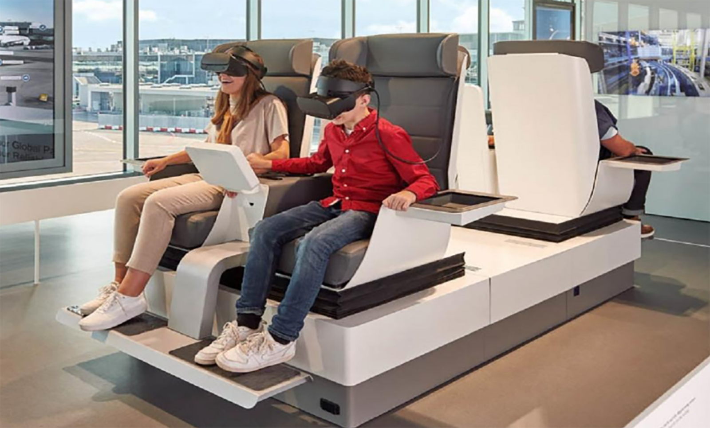

-
 Caterham configuratorDec 2022 – Nov 2024 | Renderapp
Caterham configuratorDec 2022 – Nov 2024 | RenderappServed as Product Owner for Caterham's Configurator which is a web-based tool that allows Caterham users to customize their vehicles and view high-quality renderings directly in their browser.
View Configurator. -
VR Unity Project Upgrade for German Fraport AirportJun 2024 – Nov 2024 | Freelancing
Served as Contractor Senior Unity Developer for e-Point to work on a VR project for Fraport Airport. Updated and enhanced a system that detects one or two users seated in sensor-equipped chairs with VR headsets, triggering an immersive tour experience.
View VR Experience -
 Solo Developed and published short game: Darn!My Barn!13 Jan 2025 – 30 Jan 2025 | Solo dev
Solo Developed and published short game: Darn!My Barn!13 Jan 2025 – 30 Jan 2025 | Solo devChallenged my self to building and releasing a game in just 17 days.Focused on rapid prototyping across game design, mechanics, visuals, and Unity core engineering,refining scope on the fly to meet the deadline.
View Development Timeline!
Try it on itch.io -
 Super Pokemon Bros, iConnectSep 2024 – Oct 2024 | Remote
Super Pokemon Bros, iConnectSep 2024 – Oct 2024 | RemoteSolo developed a fan-based game combining Super Mario Bros mechanics with a Pokémon theme for Pokefest 2, hosted by iConnect Technology stores. Played by over 200 unique players, delivering a unique and engaging experience.
View Gameplay